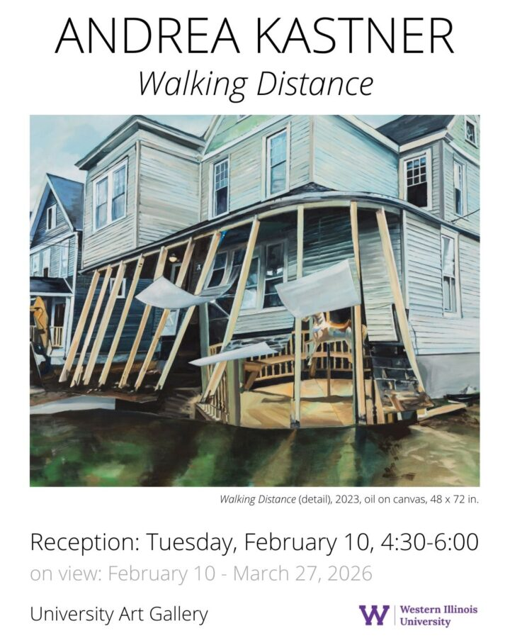

Andrea Kastner “Walking Distance”
Andrea Kastner is a Canadian painter living and working in Binghamton, New York. Her work focuses on the overlooked corners of urban spaces and the sacred nature of rejected things. She has participated in residencies at the Banff Centre for the Arts, the Vermont Studio Center, Governor’s Island, Klondike Institute of Art & Culture, and The Haliburton School of Art.